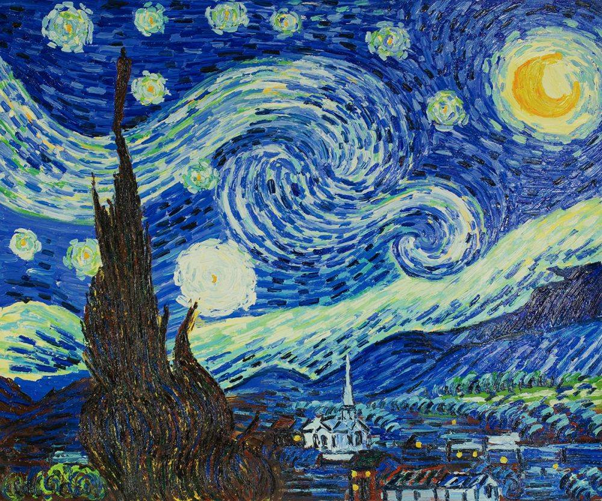
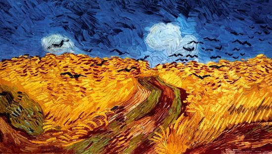
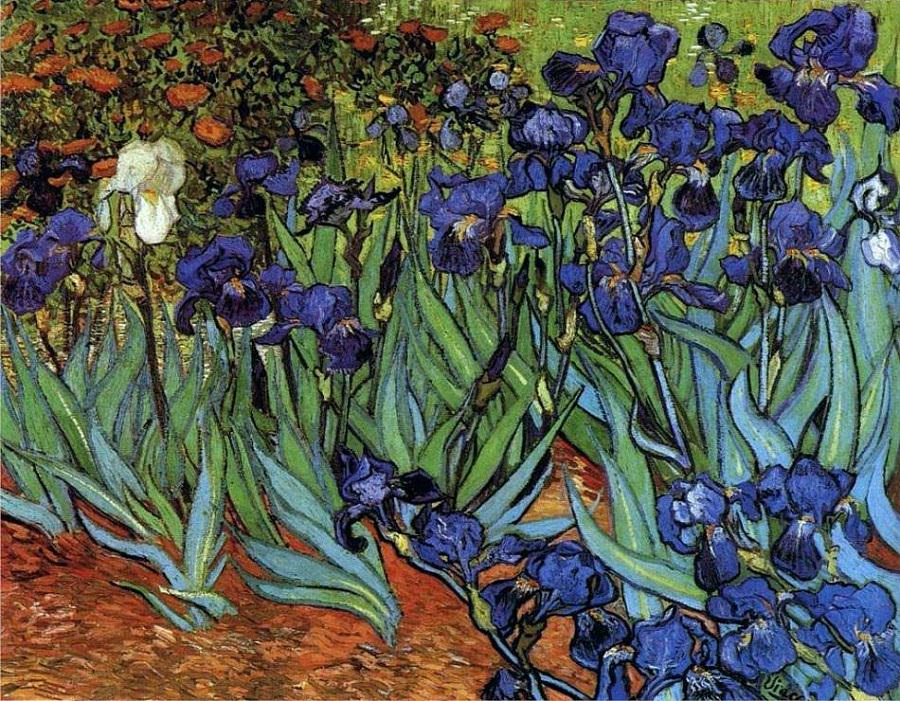

Vincent van Gogh : The Starry Night
Painted in the year of: 1889
Displays the sunrise over a village.
Location: The painting can be found at the Museum of Modern Art, New York City
Dimensions: 73.7 cm × 92.1 cm

Vincent van Gogh : Wheatfield with Crows
Painted in the year of: 1890
It is believed that this was the final painting by this artist
Location: This painting can be found at the Van Gogh Museum, Amsterdam
Dimensions: 50.2 cm × 103 cm
Dimensions: 50.2 cm × 103 cm
